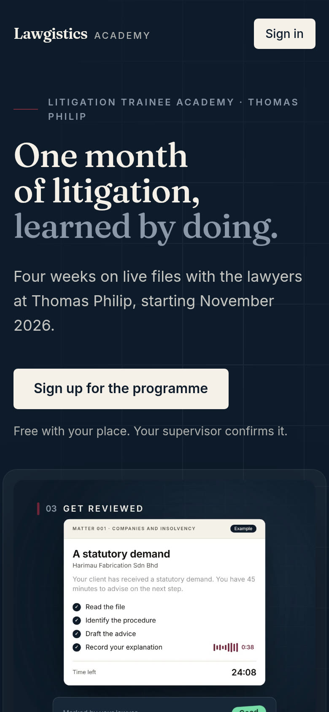
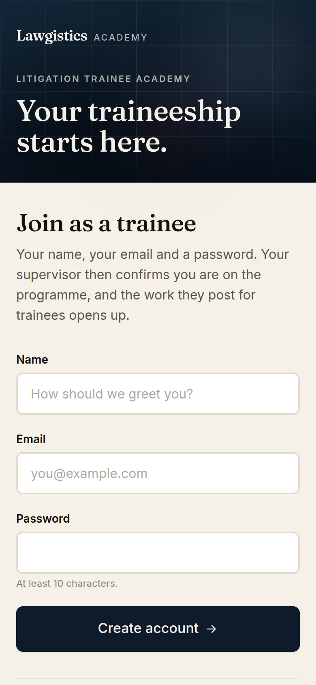
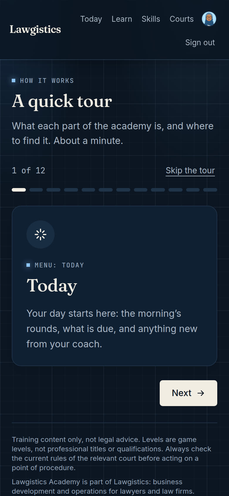
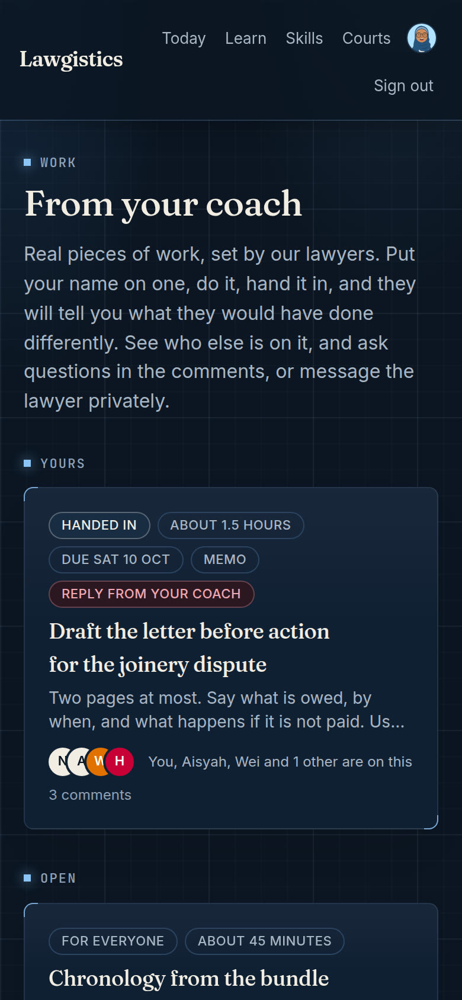
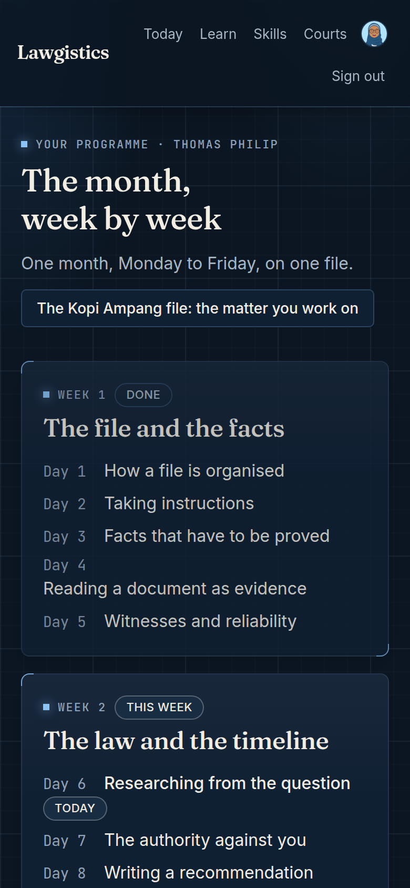

Thomas Philip · November 2026
How to use the
Litigation Trainee Academy
Eight things, about a minute.
Go to litigation-training.vercel.app/trainee and tap Sign up for the programme.
Your name, your email and a password. Your supervisor then confirms your place.
When you first sign in, a quick tour shows what each part is and where to find it.
About 30 questions. There is no pass mark. It shows where you are starting from.
Four rounds of ten questions, at 7, 8, 9 and 10am, Kuala Lumpur time.
Each round is open for its hour. A missed round stays missed, and your supervisor sees it.
Pick an answer, then say how sure you are. Be honest.
You see straight away whether you were right, and why.
Put your name on a piece of work, hand it in, and a lawyer marks it.
Never upload anything that identifies a client.
Week by week on one training file, with a short homework task for each working day.
It starts at 100%. Only a wrong answer brings it down.



Day one
The diagnostic
About 30 questions across the foundation areas. There is no pass mark. The result sets what your daily training covers.
Question 1 of 30
No pass mark
This morning, Kuala Lumpur time
Round 1 opens at 7am
An example morning: two rounds done, one missed, the last one open.
How sure are you?
Right



Example
Litigation Trainee Academy
Starts Monday
2 November.
Sign up now:
litigation-training.vercel.app/trainee
Questions? Ask your supervisor.